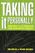
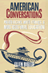
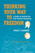
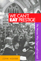

|
Reclaiming
Class
Women, Poverty, and the Promise of Higher Education in America
edited by Adair, Vivyan C. and Sandra L. Dahlberg
280 pp • 6x9 • Spring 2003
paper 978-1-59213-022-1
cloth 978-1-59213-021-4
|

|
Education
for Struggle
The American Labor Colleges of the 1920s and 1930s
Altenbaugh, Richard J.
339 pp • 6x9 • Spring 1990
cloth 978-0-87722-680-2
|

|
Women
Reformed, Women Empowered
Poor Mothers and the Endangered Promise of Head Start
Ames, Lynda J. with Jeanne Ellsworth
264 pp • 5.5x8.25 • Fall 1996
paper 978-1-56639-493-2
cloth 978-1-56639-492-5 |

|
Ideology
and Practice in Schooling
edited by Apple, Michael W. and Lois Weis
286 pp • 6x9 • Spring 1983
paper 978-0-87722-313-9
cloth 978-0-87722-295-8
|
 |
Race and Class Matters at an Elite College
Aries, Elizabeth
246 pp • 6x9 • Fall 2008
paper 978-1-59213-726-8
cloth 978-1-59213-725-1
|
 |
Speaking of Race and Class
The Student Experience at an Elite College
Aries, Elizabeth, with Richard Berman 238 pp • 6x9 • Fall
2012
paper 978-1-4399-0967-6
cloth 978-1-4399-0966-9
|

|
At
a Loss for Words
How America Is Failing Our Children and What We Can Do about
It
Bardige, Betty, foreword by T. Berry Brazelton, M.D.
272 pp • 6x9 • Spring 2005
paper 978-1-59213-393-2
cloth 978-1-59213-392-5
|
 |
Psychiatry and Behavioral Science
An Introduction and Study Guide for Medical Students
edited by Baron, MSEd, DO, David and Ellen Sholevar, MD
320 pp • 7x10 • Spring 2008
paper 978-1-59213-531-8
|

|
Choosing
Equality
The Case for Democratic Schooling
Bastian, Ann, Norm Fruchter, Marilyn Gittell, Kenneth Haskins
and Colin Greer, foreword by James P. Comer
222 pp • 5.5x8.25 • Fall 1986
paper 978-0-87722-454-9
cloth 978-0-87722-438-9 |
 |
Animals at Play
Rules of the Game
Bekoff, Marc, illustrations by Michael J. DiMotta
32 pp • 10x7• Fall 2008
cloth 978-1-59213-551-6 |

|
Dewey's Dream
Universities and Democracies in an Age of Education Reform
Benson, Lee, Ira Harkavy, and John Puckett
168 pp • 5.5x8.25 • Spring 2007
paper 978-1-59213-592-9
cloth 978-1-59213-591-2
|
 |
Knowledge for Social Change
Bacon, Dewey, and the Revolutionary Transformation of Research Universities in the Twenty-First Century
Benson, Lee, Ira Harkavy, John Puckett, Matthew Hartley, Rita A. Hodges, Francis E. Johnston, and Joann Weeks
206 pp • 6x9 • Spring 2017
paper 978-1-4399-1519-6
cloth 978-1-4399-1518-9
|
 |
Alphabet Movers
Benzwie, Teresa, Illustrated by Robert Bender
32 pp • 8.5x11 • Spring 2011
cloth 978-1-930798-08-3 |
 |
Numbers on the Move
1 2 3 Dance and Count with Me
Benzwie, Teresa, Illustrated by Mark Weber
32 pp • 11x8.5 • Spring 2011
cloth 978-1-4399-0342-1 |
 |
The Art of Play
Recess and the Practice of Invention
Beresin, Anna R.
202 pp • 6x9 • Fall 2013
paper 978-1-4399-1094-8
cloth 978-1-4399-1093-1
|
 |
Taking
It Personally
Racism in the Classroom from Kindergarten to College
Berlak, Ann and Sekani Moyenda
216 pp • 6x9 • Spring 2001
paper 978-1-56639-876-3
cloth 978-1-56639-875-6
|
 |
American
Conversations
Puerto Ricans, White Ethnics, and Multicultural Education
Bigler, Ellen
296 pp • 5.5x8.25 • Spring 1999
paper 978-1-56639-688-2
cloth 978-1-56639-687-5
|
|
Schooling
Without Labels
Parents, Educators, and Inclusive Education
Biklen, Douglas
210 pp • Fall 1991
paper 978-0-87722-876-9
cloth 978-0-87722-875-2 |

|
Law
and Order and School
Daily Life in an Educational Program for Juvenile Delinquents
Birnbaum, Shira
208 pp • 5.5x8.25 • Spring 2001
paper 978-1-56639-870-1
cloth 978-1-56639-869-5
|

|
Knowledge
and Values in Social and Educational Research
edited by Bredo, Eric and Walter Feinberg
paper 978-0-87722-245-3
cloth 978-0-87722-242-2 |

|
Closing
the Book on Homework
Enhancing Public Education and Freeing Family Time
Buell, John
176 pp • 5.5x8.25 • Fall 2003
paper 978-1-59213-218-8
cloth 978-1-59213-217-1
|

|
Affirmative
Action and the University
A Philosophical Inquiry
edited by Cahn, Steven M.
320 pp • 6x9 • Spring 1993
paper 978-1-56639-399-7
cloth 978-1-56639-030-9 |
 |
Moral Problems in Higher Education
edited by Cahn, Steven M.
264 pp • 6x9 • Spring 2011
paper 978-1-4399-0659-0
cloth 978-1-4399-0658-3
|
|
Special
Education Policies
Their History, Implementation, and Finance
Chambers, Jay G. and William T. Hartman
301 pp • Fall 1982
cloth 978-0-87722-280-4 |
|
Mayors
and Schools
Minority Voices and Democratic Tensions in Urban Education
Chambers, Stefanie
240 pp • 5.5x8.25 • Spring 2006
paper 978-1-59213-469-4
cloth 978-1-59213-468-7
|

|
The Enigmatic Academy
Class, Bureaucracy, and Religion in American Education
Churchill, Christian J., and Gerald E. Levy
234 pp • 6x9 • Spring 2012
paper 978-4399-0784-9
cloth 978-4399-0783-2 |

|
Multiethnic
Moments
The Politics of Urban Education Reform
Clarke, Susan E., Rodney E. Hero, Mara S. Sidney, Luis Fraga
and Bari Anhalt Erlichson, foreword by Clarence N. Stone
264 pp • 6x9 • Fall 2006
paper 978-1-59213-537-0
cloth 978-1-59213-536-3
|

|
Schools
and Social Justice
Connell, R. W.
144 pp • 5x8.25 • Fall 1993
paper 978-1-56639-138-2
cloth 978-1-56639-137-5
|

|
Acres
of Diamonds
Conwell, Russell H., foreword by Russell F. Weigley, introduction
by David Adamany
96 pp • 5x7 • Spring 2002
cloth 978-1-56639-962-3
|

|
Judging
Children as Children
A Proposal for a Juvenile
Justice System
Corriero, Michael A.
232 pp • 5.5x8.25 • Spring 2008
paper 978-1-59213-169-3
cloth 978-1-59213-168-6
|

|
The Teacher's Attention
Why Our Kids Must and Can Get Smaller Schools and Classes
Delavan, Garrett
244 pp • 6x9 • Spring 2009
paper 978-1-59213-894-4
cloth 978-1-59213-893-7
|

|
This
Fine Place So Far from Home
Voices of Academics from the Working Class
Dews, edited by C. L. Barney and Carolyn Leste Law
352 pp • 6x9 • Spring 1995
paper 978-1-56639-291-4
cloth 978-1-56639-290-7
|

|
Building Drexel
The University and Its City, 1891–2016
edited by Dilworth, Richardson and Scott Gabriel Knowles
400 pp • 6x9 • Fall 2016
cloth 978-1-4399-1420-5
|
|
Class,
Culture, and the Classroom
The Student Peace Movement of the 1930s
Eagan, Eileen
294 pp • Fall 1981
cloth 978-0-87722-236-1 |

|
The
Struggle for Academic Democracy
Lessons from the 1938 Revolution in New York's City Colleges
Edel, Abraham
240 pp • Spring 1990
cloth 978-0-87722-691-8 |

|
The
Struggle for Control of Public Education
Market Ideology vs. Democratic Values
Engel, Michael
223 pp • 5.5x8.25 • Fall 1999
paper 978-1-56639-741-4
cloth 978-1-56639-740-7 |
 |
Transfeminist Perspectives in and beyond Transgender and Gender Studies
edited by Enke, Anne268 pp • 6x9 • Spring 2012
paper 978-1-4399-0747-4
cloth 978-1-4399-0746-7
|

|
Growing
Up with Television
Everyday Learning Among Young Adolescents
Fisherkeller, JoEllen
224 pp • 6x9 • Spring 2002
paper 978-1-56639-953-1
cloth 978-1-56639-952-4
|

|
Justice
and School Systems
The Role of the Courts in Education Litigation
edited by Flicker, Barbara
456 pp • Spring 1990
cloth 978-0-87722-675-8 |

|
The
Skeptical Visionary
A Seymour Sarason Education Reader
edited by Fried, Robert L., Seymour Sarason
312 pp • 7x10 • Fall 2002
paper 978-1-56639-980-7
cloth 978-1-56639-979-1
|
 |
A is for Art Museum
Friedland, Katy and Marla K. Shoemaker
64 pp • 8.25x8.25 • Fall 2008
cloth 978-1-59213-963-7 |
 |
Art Museum Opposites
Friedland, Katy and Marla K. Shoemaker
44 pp • 8.5x11 • Fall 2010
cloth 978-1-4399-0523-4
|
|  |
Thinking Your Way to Freedom
A Guide to Owning Your Own Practical Reasoning
Gardner,
Susan T., illustrations by Dirk van Stralen
296 pp • 8.5x11 • Fall 2008
paper 978-1-59213-867-8
|

|
Ideology,
Culture and the Process of Schooling
Giroux, Henry A.
250 pp • Fall 1981
paper 978-0-87722-370-2
cloth 978-0-87722-228-6
|
|
Philadelphia Mural Arts @ 30
edited by Golden, Jane and David Updike
208 pp • 10x8 • Spring 2014
cloth 978-1-4399-1131-0 |
 |
Elements of Discipline
Nine Principles for Teachers and Parents
Greenspan, Stephen, foreword by Arnold Sameroff
212 pp • 6x9 • Fall 2012
paper 978-1-4399-0897-6
cloth 978-1-4399-0896-9
|

|
Lost
Talent
Women in the Sciences
Hanson, Sandra L.
240 pp • 6x9 • Spring 1996
cloth 978-1-56639-446-8
|
|
Swimming Against the Tide
African American Girls and Science Education
Hanson,
Sandra L.
224 pp • 5.5x8.25 • Fall 2008
paper 978-1-59213-622-3
cloth 978-1-59213-621-6
|

|
Temple University
125 Years of Service to Philadelphia, the Nation, and the World
Hilty, James W.
256 pp • 9x11 • Fall 2009
cloth 978-1-4399-0019-2
|
|
Exploring the Roots of Digital and Media Literacy through Personal Narrative
edited by Hobbs, Renee
226 pp • 5.5x8.25 • Spring 2016
paper 978-1-4399-1158-7
cloth 978-1-4399-1157-0
|
 |
We
Can't Eat Prestige
The Women Who Organized Harvard
Hoerr, John
280 pp • 6x9 • Spring 1997
paper 978-1-56639-925-8
cloth 978-1-56639-535-9
|

|
Equal Play
Title IX and Social Change
edited by Hogshead-Makar, Nancy and Andrew Zimbalist
328 pp • 7x10 • Fall 2007
paper 978-1-59213-380-2
cloth 978-1-59213-379-6
|

|
We
Make the Road by Walking
Conversations on Education and Social Change
Horton, Myles and Paulo Freire, edited by Brenda Bell, John
Gaventa and John Peters
296 pp • 5.5x8.25 • Fall 1990
paper 978-0-87722-775-5
cloth 978-0-87722-771-7
|

|
Public
Dollars for Private Schools
The Case of Tuition Tax Credits
edited by James, Thomas and Henry M. Levin
285 pp • Fall 1983
paper 978-0-87722-386-3
cloth 978-0-87722-316-0 |
 |
My Culture, My Color, My Self
Heritage, Resilience, and Community in the Lives of Young Adults
Jenkins, Toby S.
204 pp • 6x9 • Spring 2013
paper 978-1-4399-0830-3
cloth 978-1-4399-0829-7 |
|
Leonard
Covello and the Making of Benjamin Franklin High School
Education as if Citizenship Mattered
Johanek, Michael C. and John L. Puckett
384 pp • 6x9 • Fall 2006
cloth 978-1-59213-521-9
|

|
Objectifying Measures
The Dominance of High-Stakes Testing and the Politics of Schooling
Johnson, Amanda Walker
222 pp • 5.5x8.25 • Spring 2009
paper 978-1-59213-906-4
cloth 978-1-59213-905-7
|
 |
"We Live in the Shadow"
Inner-City Kids Tell Their Stories through Photographs
Kaplan, Elaine Bell
208 pp • 6x9 • Spring 2013
paper 978-1-43990-790-0
cloth 978-1-43990-789-4
|
 |
Addressing Violence Against Women on College Campuses
edited by Kaukinen, Catherine, Michelle Hughes Miller, and Ráchael A. Powers
330 pp • 6x9 • Spring 2017
paper 978-1-4399-1376-5
cloth 978-1-4399-1375-8
|

|
Achieving
Against the Odds
How Academics Become Teachers of Diverse Students
edited by Kingston-Mann, Esther and Tim Sieber
240 pp • 6x9 • Spring 2001
paper 978-1-56639-851-0
cloth 978-1-56639-850-3
|

|
P
Is for Philadelphia
Korman, Susan
64 pp • 10x8 • Spring 2005
cloth 978-1-59213-107-5
|

|
The University Against Itself
The NYU Strike and the Future of the Academic Workplace
edited by Krause, Monika, Mary Nolan, Michael Palm and Andrew Ross
280 pp • 6x9 • Fall 2007
paper 978-1-59213-741-1
cloth 978-1-59213-740-4
|

|
Beyond
the Schoolhouse Gate
Free Speech and the Inculcation of Values
Lane, Robert Wheeler
224 pp • 5.5x8.25 • Spring 1995
paper 978-1-56639-275-4
cloth 978-1-56639-274-7
|

|
Comprehending
Columbine
Larkin, Ralph W.
264 pp • 6x9 • Fall 2006
paper 978-1-59213-491-5
cloth 978-1-59213-490-8
|
 |
Messages from Home
The Parent-Child Home Program for Overcoming Educational Disadvantage
Levenstein, Phyllis and Susan Levenstein
Revised and Updated Edition
288 pp • 6x9 • Spring 2008
paper 978-1-59213-677-3
cloth 978-1-59123-676-6
|

|
Philosophy
Goes to School
Lipman, Matthew
250 pp • Spring 1988
paper 978-0-87722-555-3
cloth 978-0-87722-537-9 |

|
Philosophy
in the Classroom
Lipman, Matthew, Ann Margaret Sharp and Frederick S. Oscanyan
Second Edition
240 pp • Spring 1985
paper 978-0-87722-183-8
|
|
Time
to Care
Redesigning Child Care to Promote Education, Support Families,
and Build Communities
Lombardi, Joan
248 pp • 6x9 • Fall 2002
paper 978-1-59213-009-2
cloth 978-1-59213-008-5
|
 |
Under New Management
Universities, Administrative Labor, and the Professional Turn
Martin, Randy
272 pp • 6x9 • Spring 2011
paper 978-1-4399-0696-5
cloth 978-1-4399-0695-8
|

|
Bullying
The Social Destruction of Self
Martocci, Laura
220 pp • 6x9 • Fall 2014
paper 978-1-43991-073-3
cloth 978-1-43991-072-6
|

|
Blow Up the Humanities
Miller, Toby
172 pp • 5.5x8.25 • Fall 2012
paper 978-1-4399-0983-6
cloth 978-1-4399-0982-9
|

|
Transforming
Knowledge
Minnich, Elizabeth Kamarck
Second Edition
312 pp • 6x9 • Fall 2004
paper 978-1-59213-132-7
cloth 978-1-59213-131-0
|
 |
Greening Africana Studies
Linking Environmental Studies with Transforming Black Experiences
Patterson, Rubin
258 pp • 5.5x8.25 • Fall 2014
paper 978-1-43990-872-3
cloth 978-1-43990-871-6 |

|
Tutoring Matters
Everything You Always Wanted to Know about How to Tutor
Second Edition
Chin, Tiffani, Jerome Rabow and Jeimee Estrada
240 pp • 5.5x8.25 • Fall 2011
paper 978-1-4399-0741-2
cloth 978-1-4399-0740-5
|
|
Struggling State
Nationalism, Mass Militarization, and the Education of Eritrea
Riggan, Jennifer
258 pp • 6x9 • Spring 2016
cloth 978-1-4399-1270-6
|

|
The Production of Living Knowledge
The Crisis of the University and the Transformation of Labor in Europe and North America
Roggero, Gigi, foreword by Enda Brophy
214 pp • 5.5x8.25 • Fall 2011
cloth 978-1-4399-0573-9
|

|
Midwifery
and Childbirth in America
Rooks, Judith Pence, foreword by Charles S. Mahan, M.D.
576 pp • 7x10 • Spring 1999
paper 978-1-56639-711-7
cloth 978-1-56639-565-6
|

|
The
Carrot or the Stick for School Desegregation Policy
Magnet Schools or Forced Busing
Rossell, Christine H.
272 pp • Spring 1990
paper 978-0-87722-924-7
cloth 978-0-87722-682-6 |

|
Universities
in the Age of Corporate Science
The UC Berkeley-Novartis Controversy
Rudy, Alan P., Dawn Coppin, Jason Konefal, Bradley T. Shaw,
Toby A. Ten Eyck, Craig Harris and Lawrence Busch
256 pp • 6x9 • Fall 2006
cloth 978-1-59213-533-2
|
 |
In a Queer Voice
Journeys of Resilience from Adolescence to Adulthood
Sadowski, Michael, foreword by Carol Gilligan
210 pp • 6x9 • Fall 2012
paper 978-1-4399-0802-0
cloth 978-1-4399-0801-3 |

|
Higher Education and Democracy
Essays on Service-Learning and Civic Engagement
Saltmarsh, John and Edward A. Zlotkowski
416 pp • 6x9 • Fall 2010
cloth 978-1-4399-0037-6
|

|
"To Serve a Larger Purpose"
Engagement for Democracy and the Transformation of Higher Education
edited by Saltmarsh, John and Matthew Hartley
326 pp • 6x9 • Spring 2011
paper 978-1-4399-0507-4
cloth 978-1-4399-0506-7
|

|
A
Case About Amy
Smith, R. C., foreword by Frank G. Bowe
344 pp • 6x9 • Spring 1996
paper 978-1-56639-412-3
cloth 978-1-56639-411-6
|
 |
Liberating Service Learning and the Rest of Higher Education Civic Engagement
Stoecker, Randy
244 pp • 6x9 • Spring 2016
paper 978-1-4399-1352-9
cloth 978-1-4399-1351-2
|

|
Veils
and Daggers
A Century of National Geographic's Representation of the Arab
World
Steet, Linda
224 pp • 6x9 • Fall 1999
paper 978-1-56639-752-0
cloth 978-1-56639-751-3
|
|
Starting
Out
Class and Community in the Lives of Working-Class Youth
Steinitz, Victoria Anne and Ellen Rachel Solomon
248 pp • Fall 1986
paper 978-0-87722-620-8
cloth 978-0-87722-430-3
|

|
The Unheard Voices
Community Organizations and Service Learning
edited by Stoecker, Randy, Elizabeth A. Tryon
232 pp • 5.5x8.25 • Spring 2009
paper 978-1-59213-995-8
cloth 978-1-59213-994-1
|
|
Tales
Out of School
Implementing Organizational Change in the Elementary Grades
Sussmann, Leila
266 pp • Spring 1977
cloth 978-0-87722-097-8 |
 |
The Magic of Children's Gardens
Inspiring Through Creative Design
Tai, Lolly, with a Foreword by Jane L. Taylor
376 pp • 8x10 • Spring 2017
cloth 978-1-4399-1447-2
|

|
Youth
at Work
The Unionized Fast-food and Grocery Workplace
Tannock, Stuart
264 pp • 6x9 • Spring 2001
paper 978-1-56639-854-1
cloth 978-1-56639-853-4
|

|
Schooling
for "Good Rebels"
Socialist Education for Children in the United States, 1900-1920
Teitelbaum, Kenneth
304 pp • 6x9 • Fall 1992
cloth 978-0-87722-980-3 |

|
Multicultural Girlhood
Racism, Sexuality, and the Conflicted Spaces of American Education
Thomas, Mary E.
216 pp • 6x9 • Fall 2011
paper 978-1-4399-0732-0
cloth 978-1-4399-0731-3
|
 |
Teaching Marianne and Uncle Sam
Public Education, State Centralization, and Teacher Unionism in France and the United States
Toloudis, Nicholas
230 pp • 6x9 • Fall 2012
cloth 978-1-43990-906-5
|

|
Presenting
Women Philosophers
edited by Tougas, Cecile T. and Sara Ebenreck
280 pp • 7x10 • Spring 2000
paper 978-1-56639-761-2
cloth 978-1-56639-760-5
|

|
The
Education of a University President
Wachman, Marvin, foreword by James W. Hilty
240 pp • 6x9 • Spring 2005
cloth 978-1-59213-376-5
|
|
Knowledge,
Structure, and Use
Implications for Synthesis and Interpretation
edited by Ward, Spencer A. and Linda J. Reed
Fall 1988
cloth 978-0-87722-331-3 |

|
Historical
Thinking and Other Unnatural Acts
Charting the Future of Teaching the Past
Wineburg, Sam
272 pp • 6x9 • Spring 2001
paper 978-1-56639-856-5
cloth 978-1-56639-855-8
|

|
To
Move, To Learn
Witkin, Kate with Richard Philip, photographs by Ricker
Winsor
160 pp • Spring 1977
cloth 978-0-87722-091-6 |
 |
Empowering Young Writers
The Writers Matter Approach
Yost, Deborah S., Robert Vogel and Kimberly E. Lewinski
192 pp • 6x9 • Spring 2014
paper 978-1-4399-1082-5
cloth 978-1-4399-1081-8 |